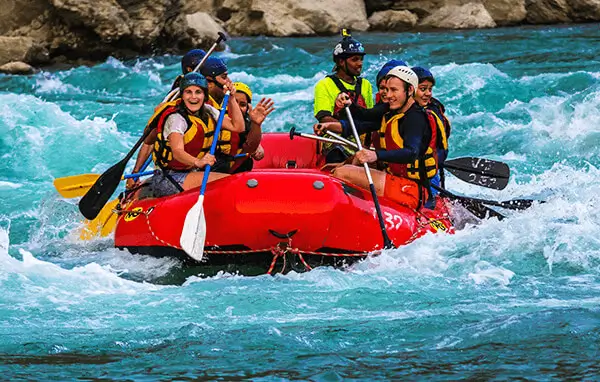
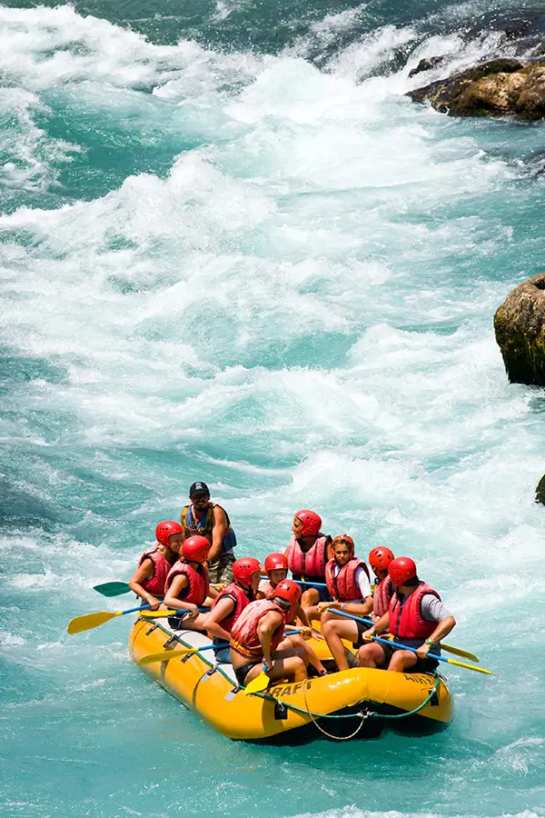

Choose Your River Experience
Discover carefully designed rafting experiences that combine excitement, teamwork, exploration, and unforgettable moments on the water.

Discover carefully designed rafting experiences that combine excitement, teamwork, exploration, and unforgettable moments on the water.
EXPLORE OUR ADVENTURES
Whether you are stepping into a raft for the first time or looking for a greater challenge, Rapid Rivers Rafting offers experiences designed for different interests, confidence levels, and styles of adventure.
Explore our featured trips below and discover an experience that gives you the right balance of excitement, teamwork, exploration, and time on the river.

THE CHALLENGE
Take on one of our most demanding river experiences with Los Dientes del Diablo. Designed for confident adventurers, this full-day expedition combines powerful rapids, careful navigation, and close teamwork.
Prepare to paddle, respond, and work together as the river takes centre stage. This experience is ideal for guests looking for a serious step into more challenging white water.

THE PROGRESSION
Big Mallard delivers a rewarding balance of excitement and accessibility. Navigate lively stretches of white water, work together with your crew, and enjoy the changing character of the river.
It is an excellent choice for adventurers who have some confidence on the water and want to take their rafting experience to the next level.

START HERE
New to white water rafting? River Discovery provides an accessible introduction to the excitement of moving water. Spend half a day learning essential rafting techniques, building confidence, and discovering the river with your crew.
This experience is designed for first-time rafters who want an enjoyable introduction before progressing to more demanding river adventures.

THE JOURNEY
River Expedition is designed for those who want more time on the water and more opportunity to explore. This full-day experience combines scenic stretches, active rapids, and teamwork for a complete day of river adventure.
Expect changing conditions, shared challenges, beautiful surroundings, and plenty of moments to remember along the journey.

THE ADRENALINE
For adventurers who want to maximise their time in the rapids, White Water Rush delivers an energetic half-day experience. Paddle through fast-moving sections and respond to the river as a coordinated team.
Enjoy the exhilaration of moving water in an adventure built around action, teamwork, and memorable moments on the river.
COMPARE YOUR OPTIONS
| Trip | Duration | Difficulty | Experience |
|---|---|---|---|
| Los Dientes del Diablo | Full Day | Advanced | Technical Rapids & Team Adventure |
| Big Mallard | Half Day | Intermediate | White Water & Team Paddling |
| River Discovery | Half Day | Beginner | Introductory Rafting |
| River Expedition | Full Day | Intermediate | Extended River Exploration |
| White Water Rush | Half Day | Intermediate | Fast-Paced White Water |
READY TO TAKE THE NEXT STEP?
Have questions about our experiences or need help choosing the right trip? Our team is ready to help you plan your next adventure on the river.
Plan Your Adventure